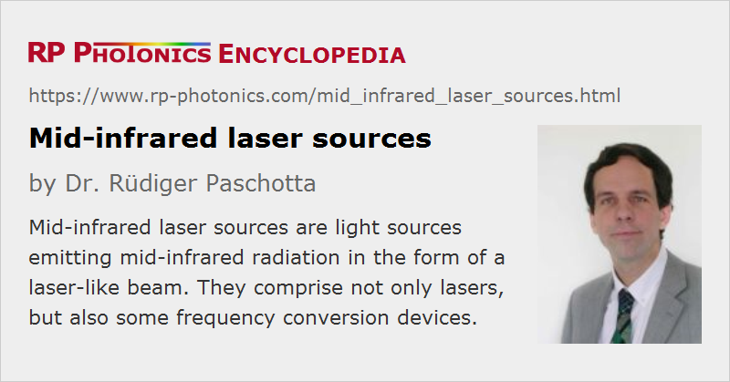

Mid-infrared Laser Sources
Definition: light sources emitting mid-infrared radiation in the form of a laser-like beam
More general terms: laser sources, mid-infrared light sources
German: Laserquellen im mittleren Infrarot
Categories: nonlinear optics, photonic devices, lasers
How to cite the article; suggest additional literature
Author: Dr. Rüdiger Paschotta
This article discusses those sources of mid-infrared light which emit laser-like beams. They may either contain a mid-infrared (mid-IR) laser or some shorter-wavelength laser combined with means for nonlinear frequency conversion. The mid-infrared spectral range is often understood to include wavelengths from 3 μm to 8 μm. Note, however, that substantially different definitions are used by different authors.
Typical applications of mid-infrared sources are the laser absorption spectroscopy of trace gases and military countermeasures for airplanes against heat-seeking missiles.
Quantum Cascade Lasers
Quantum cascade lasers represent a relatively recent development in the area of semiconductor lasers. Whereas earlier mid-infrared semiconductor lasers were based on interband transitions, quantum cascade lasers utilize intersubband transitions. The photon energy (and thus the wavelength) of transitions can be varied in a wide range by engineering the details of the semiconductor layer structure. Even for a fixed design, some significant range for wavelength tuning (sometimes more than 10% of the center wavelength) can be covered with external-cavity devices.
Many quantum cascade lasers can be operated at room temperature, even continuously, although the best performance values are achieved for cryogenic cooling. The generation of short pulses with durations far below 1 ns is possible, although with fairly limited peak powers.
Lead Salt Lasers
Before quantum cascade lasers were developed, large parts of the mid-infrared spectrum were accessed with various types of lead salt lasers. These are typically based on ternary lead compounds such as PbxSn1−xTe or with quaternary compounds like PbxEu1−xSeyTe1−y. The band gap energy, which determines the emission wavelength, is fairly small – below 0.5 eV.
Lead salt lasers need to be operated at cryogenic temperatures (normally well below 200 K, particularly for the longer wavelengths). They produce only low power levels (typically of the order of 1 mW), and their wall-plug efficiency is very low compared with that of shorter-wavelength laser diodes. Wavelength tuning over a few nanometers is normally possible via the device temperature.
Doped Insulator Lasers
Only a few types of doped insulator solid-state lasers emit in the mid-infrared spectral region. Some examples are:
- Cr2+:ZnSe (chromium-doped zinc selenide) lasers (and some lasers with similar materials) can emit up to roughly 3.5 μm. They are broadly tunable and can easily produce hundreds of milliwatts of output power.
- Fe2+:ZnSe lasers can emit at 3.7–5.1 μm.
- Fiber lasers based on erbium-doped or holmium-doped fluoride fibers (or other doped mid-infrared fibers) can emit at wavelengths e.g. around 3 μm. In other case, near-IR fiber lasers are used in conjunction with difference frequency generation (see below).
The choice of laser crystals and glasses is limited to those with fairly low phonon energies, because otherwise the laser transition would be quenched by multi-phonon transitions.
Gas and Chemical Lasers
Only few gas lasers emit in the mid-infrared region. An example is the helium–neon laser emitting at 3.391 μm.
Deuterium fluoride chemical lasers can emit around 3.8 μm wavelength. They are used for some military purposes.
Sources Based on Difference Frequency Generation
A wide wavelength range in the mid-infrared region can be covered by difference frequency generation (DFG) in a nonlinear crystal, starting with two near-infrared beams. For example, one may use a 1064-nm Nd:YAG laser and wavelength-tunable 1.5-μm erbium-doped fiber laser and mix their outputs in a periodically poled lithium niobate (LiNbO3) crystal. When the fiber laser is tuned between 1530 nm and 1580 nm, for example, the mid-infrared output covers the range from 3493 nm to 3258 nm. (That range corresponds to the same variation of optical frequency as that of the fiber laser, but at long wavelengths this corresponds to a larger wavelength range.)
For continuously operating lasers, the nonlinear conversion efficiency is typically quite low, and the generated output power is often even below 1 mW, which however is often sufficient for spectroscopic investigations. Much higher outputs are possible with pulsed beams, e.g., from Q-switched lasers, which of course need to be synchronized precisely.
Recently, it has become possible to fabricate orientation-patterned gallium arsenide (GaAs), which allows one to obtain quasi-phase matching for difference frequency generation with a very wide range of output wavelengths.
Optical Parametric Oscillators, Amplifiers and Generators
Another option for nonlinear frequency conversion is to start with a single near-infrared laser and pump an optical parametric oscillator (OPO), amplifier (OPA) or generator (OPG). The generated idler wave can then be in the mid-infrared spectral region. Some examples:
- A mode-locked picosecond Nd:YVO4 laser at 1064 nm can be used for synchronous pumping of an OPO with a LiNbO3 crystal, allowing idler outputs up to 4 μm or even 4.5 μm, with the limit set by the increasing idler absorption at long wavelengths. Such an OPO will usually have a resonant signal wavelength, whereas the idler wave is directly coupled out after the nonlinear crystal.
- Q-switched lasers are often used for pumping nanosecond OPOs reaching far into the mid-infrared region. Common crystal materials for such applications are zinc germanium diphosphide (ZGP, ZnGeP2), silver gallium sulfide and selenide (AgGaS2, AgGaSe2), gallium selenide (GaSe), and cadmium selenide (CdSe). As many of these materials are not transparent in the 1-μm region, one often has to use tandem OPOs: a first OPO converts the 1-μm laser radiation to a longer wavelength which is then used to pump the actual mid-infrared OPO. Both signal and idler of the latter can be in the mid-infrared spectral region.
Such devices can easily generate pulses with energies of tens of millijoules. The output wavelength may be tuned over hundreds of nanometers.
Supercontinuum Sources
There are sources based on supercontinuum generation where the mid-IR region is spanned. This can be based on certain mid-infrared fibers, through which intense light pulses are sent, such that strong nonlinear interactions occur. One may then extract the wanted spectral components from the broadband output – for example, with a tunable bandpass filter to obtain a broadly tunable source.
Other Sources
Some less frequently used mid-infrared source are:
Required Optics
Mid-infrared laser sources require special optical elements working at the relevant long wavelengths; see the article on infrared optics.
Suppliers
The RP Photonics Buyer's Guide contains 48 suppliers for mid-infrared laser sources. Among them:
Questions and Comments from Users
Here you can submit questions and comments. As far as they get accepted by the author, they will appear above this paragraph together with the author’s answer. The author will decide on acceptance based on certain criteria. Essentially, the issue must be of sufficiently broad interest.
Please do not enter personal data here; we would otherwise delete it soon. (See also our privacy declaration.) If you wish to receive personal feedback or consultancy from the author, please contact him e.g. via e-mail.
By submitting the information, you give your consent to the potential publication of your inputs on our website according to our rules. (If you later retract your consent, we will delete those inputs.) As your inputs are first reviewed by the author, they may be published with some delay.
Bibliography
| [1] | J. F. Butler et al., “Properties of the PbSe diode laser”, IEEE J. Quantum Electron. 1 (1), 4 (1965), doi:10.1109/JQE.1965.1072173 |
| [2] | J. Chen et al., “Single spatial mode room temperature operated 3.15μm diode lasers”, Electron. Lett. 46 (5), 367 (2010), doi:10.1049/el.2010.2894 |
| [3] | S. Mirov et al., “Progress in Cr2+ and Fe2+ doped mid-IR laser materials”, Laser & Photon. Rev. 4 (1), 21 (2010), doi:10.1002/lpor.200810076 |
| [4] | D. G. Winters et al., “Subpicosecond fiber-based soliton-tuned mid-infrared source in the 9.7–14.9 μm wavelength region”, Opt. Lett. 35 (13), 2179 (2010), doi:10.1364/OL.35.002179 |
| [5] | E. Lippert et al., “A 22-watt mid-infrared optical parametric oscillator with V-shaped 3-mirror ring resonator”, Opt. Express 18 (25), 26475 (2010), doi:10.1364/OE.18.026475 |
| [6] | J. Li et al., “High-power diode-pumped fiber laser operating at 3 μm”, Opt. Lett. 36 (18), 3642 (2011), doi:10.1364/OL.36.003642 |
| [7] | T. W. Neely et al., “High-power broadband laser source tunable from 3.0 μm to 4.4 μm based on a femtosecond Yb:fiber oscillator”, Opt. Lett. 36 (20), 4020 (2011), doi:10.1364/OL.36.004020 |
| [8] | M. Ebrahim-Zadeh and K. Vodopyanov, “Mid-infrared coherent sources and applications: introduction”, J. Opt. Soc. Am. B 33 (11), MIC1 (2016), doi:10.1364/JOSAB.33.00MIC1 |
See also: infrared light, quantum cascade lasers, nonlinear frequency conversion, sum and difference frequency generation, orientation-patterned semiconductors, laser absorption spectroscopy, infrared optics
and other articles in the categories nonlinear optics, photonic devices, lasers
|  |
If you like this page, please share the link with your friends and colleagues, e.g. via social media:
These sharing buttons are implemented in a privacy-friendly way!